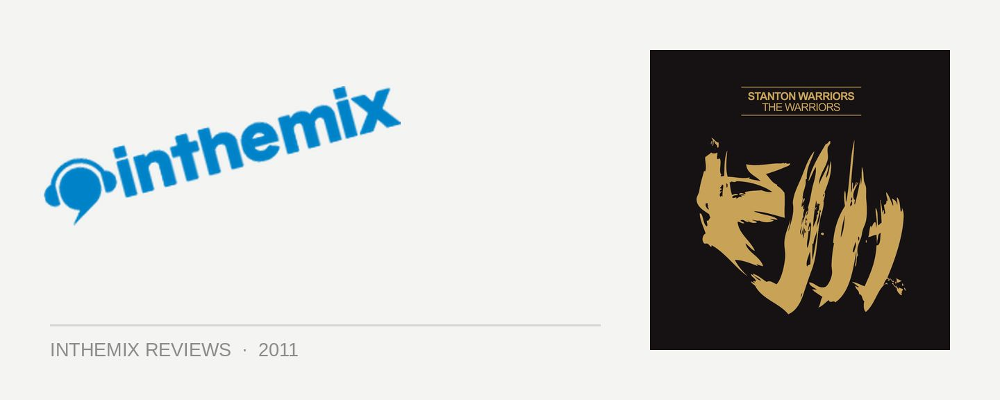

Stanton Warriors - The Warriors
Even while the breaks scene was going through its ups and downs over the years, the UK’s Stanton Warriors have been drawing from a bottomless well of broken beat goodness. Be it hip hop, electro, tech or house, they’ve never had trouble finding new sounds to stir into the breaks mix. It’s an approach that’s been showcased superbly on their Stanton Sessions DJ mixes, as well as their Lost Files artist album in 2006 that was discreetly attached to Stanton Sessions Vol. 2, which saw them experimenting with down-tempo beats and different vocalists, as well tunes like Get Em High that were tweaked for mass appeal.
Now, with their long talked-about new album The Warriors finally reaching us, it’s looking like it’s time for Dom Butler and Mark Yardley to wrestle a bigger place in the spotlight than ever before.
The opener Get Up sets the tone for The Warriors. A regular in their live sets over the past few months and already getting a thrashing on triple j, it’s the Stantons’ first bona-fide crossover hit. Beginning with a Spaghetti Western guitar lick, it’s soon joined by a functional rap from Hollywood Holt, talking about rocking it Stanton-style out in clubs. When the first beat drops, it’s a sexy booty-bass bounce, which eventually rolls into a rocky breakbeat chorus with a thrilling call-to-action from Ruby Goe. More geared for the radio than anything they’ve ever done before, it’s got an irresistible sense of fun.
From there, the massive crossover tunes just keep rolling in. Bushido is a rollicking mix of tearout breakbeat, smooth raps and bottom-heavy dubstep breakdowns, while New York is a classic Stanton Warriors bassline breaks offering, just with even more cleverness, musicality and production polish. Turn Me Up Some once again sees Dom and Mark rolling out a wobbly breaks and dubstep mash-up. They take a classic blues sample and smoothly bounce it off a vocal call-out that gives the song its title; drumming up further energy with a stuttering drum-kick and a bottom-heavy bassline.
Dom and Mark have certainly crafted a solid offering of radio-friendly ‘songs’ on The Warriors, full of catchy hooks, vocals and clever musicality. Importantly, though, they haven’t cashed in their breakbeat credentials in the process. The beats and grooves are water-tight as always, but musically they’ve pushed themselves beyond simply crafting effective DJ tools. The different elements just interlock so cleverly, with the Stanton’s clever use of samples complimenting their songwriting, rather than being the groundwork on which the tunes are based.
However, where the album falls short is offering anything other than a disconnected bunch of rollicking tunes. Dakota drops a few tracks in, which sees them plucking an obscure ‘60s sample and transforming it into a quirky breaks offering. It’s at a slower tempo than any of the bangers that surround it, but there’s next to nothing to offer it context within the album, meaning it unfairly comes off as filler.
Later, Precinct makes a welcome reappearance, with an added rap from Eboi that helps shape it into more of a ‘song’ to fit better with the theme of the album, but then things conclude abruptly with the anti-climactic Out Of My Head and we’re dropped into silence before we even realise what’s happening.
There’s deservedly plenty of heat on many of the tracks here, but if the Stanton Warriors planned to write an album of out-and-out crossover bangers, then they should have definitely worked a little harder to give it the flow of a DJ set (or a Stanton Sessions release). If a proper ‘artist album’ approach was really what Dom and Mark were going for, they neglected to look at the bigger picture. We’re left with something that’s devoid of cohesiveness and begging for a few slower moments like we saw on The Lost Files.
While this means The Warriors falls well short of greatness, nothing gets in the way of the fact that it’s packed with kick-ass tunes that have already proved good enough to secure some well-deserved crossover success for the Stanton Warriors.
The Warriors is out now through Central Station Records.